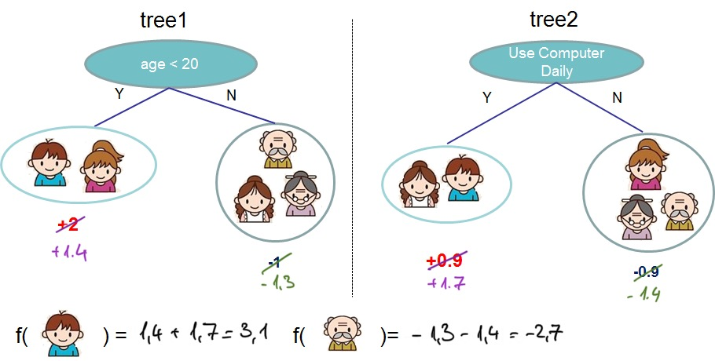

How it works
transferboost applies the idea of
Transfer Learning to
gradient boosting models.
Transfer learning focuses on "storing knowledge gained while solving one problem and applying
it to a different but related problem" (cit Wikipedia).
Within the context of gradient boosted trees, the knowledge of one task is encoded
in the tree structure that was learned during the training process.
Example
The cartoon depicted in the XGboost documentation
and in the XGBoost Paper is a good example to illustrate how
transferboost works.
Starting task
Consider this being a shallow, two-tree-xgboost model, trained to predict if a person likes video games. The first tree splits the population in two groups, based on age, while the second splits the population based on the daily usage of a computer.

Transfer learning process
Consider the use case where you want to switch problem, from predicting if a person likes video games to
predicting if the person watches Netflix.
The tree structure learned in the previous task might not be the optimal, but it might still have
predictive power to predict the new target.
When performing transfer learning, transferboost assigns new values of every leaf by keeping the learned
tree structures and re-calculating the leaf values with the new targets, as shown in the image

More in detail
In order to recalculate the leaf values,
transferboost leverages on the equation used by XGBoost and Lightgbm to calculate the optimal leaf values, ie.
where j represents the index of the leaf, I_{j} represents the subset of observations being mapped to the j-th
leaf.
g and h represent the gradient and hessian of the loss function.
The following steps are performed in order to recalculate the leaf values:
- transferboost remaps the data to the leaf by applying the trained
xgboost or lightgbm model, in order to obtain I_{j}.
- the gradient g and hessian h are computed using the new target y2
- once the gradients and hessians are calculated, the leaf outputs follow as per the equation above.